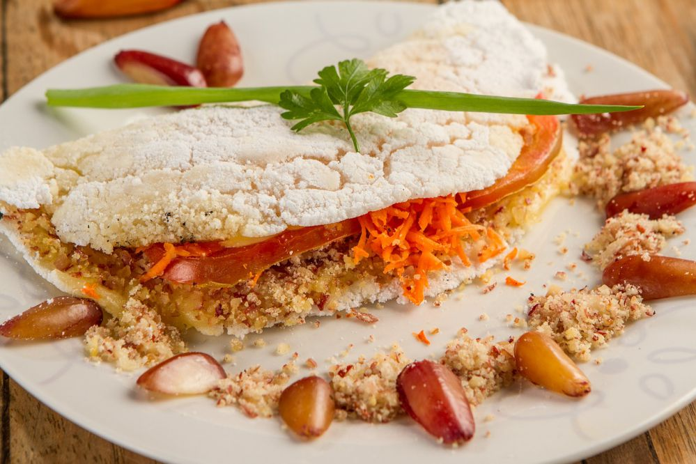

<ul class="dropdown-menu"><!DOCTYPE html>
  <html lang="en">
  <head>
      <meta charset="UTF-8">
      <meta http-equiv="X-UA-Compatible" content="IE=edge">
      <meta name="viewport" content="width=device-width, initial-scale=1.0">
      <title>Página Inicial</title>
      <link href="https://cdn.jsdelivr.net/npm/bootstrap@5.3.1/dist/css/bootstrap.min.css" rel="stylesheet" integrity="sha384-4bw+/aepP/YC94hEpVNVgiZdgIC5+VKNBQNGCHeKRQN+PtmoHDEXuppvnDJzQIu9" crossorigin="anonymous">
      <link rel="stylesheet" type="text/css" href="style.css" media="screen" />
      <script src="https://cdn.jsdelivr.net/npm/@popperjs/core@2.11.8/dist/umd/popper.min.js" integrity="sha384-I7E8VVD/ismYTF4hNIPjVp/Zjvgyol6VFvRkX/vR+Vc4jQkC+hVqc2pM8ODewa9r" crossorigin="anonymous"></script>
  <script src="https://cdn.jsdelivr.net/npm/bootstrap@5.3.1/dist/js/bootstrap.min.js" integrity="sha384-Rx+T1VzGupg4BHQYs2gCW9It+akI2MM/mndMCy36UVfodzcJcF0GGLxZIzObiEfa" crossorigin="anonymous"></script>
  </head>
<body> 
  <nav class="navbar navbar-expand-lg bg-body-tertiary">
    <div class="container-fluid">
      <a class="navbar-brand" href="#">comidas tipicas</a>
      <button class="navbar-toggler" type="button" data-bs-toggle="collapse" data-bs-target="#navbarSupportedContent" aria-controls="navbarSupportedContent" aria-expanded="false" aria-label="Toggle navigation">
        <span class="navbar-toggler-icon"></span>
      </button>
      <div class="collapse navbar-collapse" id="navbarSupportedContent">
        <ul class="navbar-nav me-auto mb-2 mb-lg-0">
          <li class="nav-item">
            <a class="nav-link active" aria-current="page" href="#">comida tipicas</a>
          </li>
          <li class="nav-item">
            <a class="nav-link" href="https://www.procuroacho.com/empresas/pr/londrina/48.075.167/0001-48/rico-paladar">pratos diferenciados</a>
          </li>
          <li class="nav-item dropdown">
            <a class="nav-link dropdown-toggle" href="#" role="button" data-bs-toggle="dropdown" aria-expanded="false">
              Sabores diversificados
            </a>
            <ul class="dropdown-menu">
              <li><a class="dropdown-item" href="sessao1.html">Sessão 1</a></li>
              <li><a class="dropdown-item" href="sessao2.html">Sessão 2</a></li>
              <li><a class="dropdown-item" href="sessao3.html">Sessão 3</a></li>
              <li><a class="dropdown-item" href="sessao4.html">Sessão 4</a></li>
              <li><a class="dropdown-item" href="sessao5.html">Sessão 5</a></li>
            </ul>
          </li>
          <li class="nav-item">
            <a class="nav-link disabled" aria-disabled="true">Disabled</a>
          </li>
        </ul>
        <form class="d-flex" role="search">
          <input class="form-control me-2" type="search" placeholder="Search" aria-label="Search">
          <button class="btn btn-outline-success" type="submit">Search</button>
        </form>
      </div>
    </div>
  </nav>
    <header class="cabeçalho">
        
        
        <li class="cabeçalho-imagem-Lista-item">
        <ul>
          <header>
            <li>Estudante</li>
            <li>Escola</li>
            <a href="https://www.procuroacho.com/empresas/pr/londrina/48.075.167/0001-48/rico-paladar">restaurante</a>
      </ul>
   </header>


   
</body>
</html>


